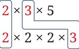
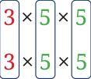

Find the common factors and the HCF of the following numbers:
- 50, 60
- 140, 275
- 77, 725
- 370, 592
- 81, 243
How do we directly find the HCF without listing all the factors?
Example 4: Find the HCF of 30 and 72.
\(30 = 2 \times 3 \times 5\)
\(72 = 2 \times 2 \times 2 \times 3 \times 3\)
We need the largest common subpart to find the HCF. Clearly, it will contain only those primes that occur in both the factorisations: 2 and 3 in this case.
How many 2s will it contain?
The prime factorisation of 30 has only one 2. So, the largest common subpart should contain only one 2.
How many 3s will it contain?
The prime factorisation of 30 has only one 3. So, the largest common subpart should contain only one 3.
This has been carried out below.

\(30 = \boxed{2} \times \boxed{3} \times 5\)
\(72 = \boxed{2} \times 2 \times 2 \times \boxed{3} \times 3\)
\(\text{HCF} = 2 \times 3 = 6\)
Thus, to find the HCF, we identify the common primes and find the minimum number of times each of them appear in the factorisations of the given numbers.
Example 5: Find the HCF of 225 and 750.
\(225 = 3 \times 3 \times 5 \times 5\)
\(750 = 2 \times 3 \times 5 \times 5 \times 5\)
Common primes: 3 and 5. Let us find the largest common subpart. How many 3s will it contain?
750 contains only one 3, which is the minimum number of 3 across both numbers. So the largest common subpart should contain only one 3.
How many 5s will it contain?

225 contains the minimum number of 5s which occurs two times. So, the largest common subpart should contain two 5s, i.e., \(5 \times 5\).
\(225 = 3 \times \boxed{3} \times \boxed{5} \times \boxed{5}\)
\(750 = 2 \times \boxed{3} \times \boxed{5} \times \boxed{5} \times 5\)
\(\text{HCF} = 3 \times 5 \times 5 = 75\)
To find the HCF of more than 2 numbers, a similar method of finding the largest common subpart of the common primes can be followed.